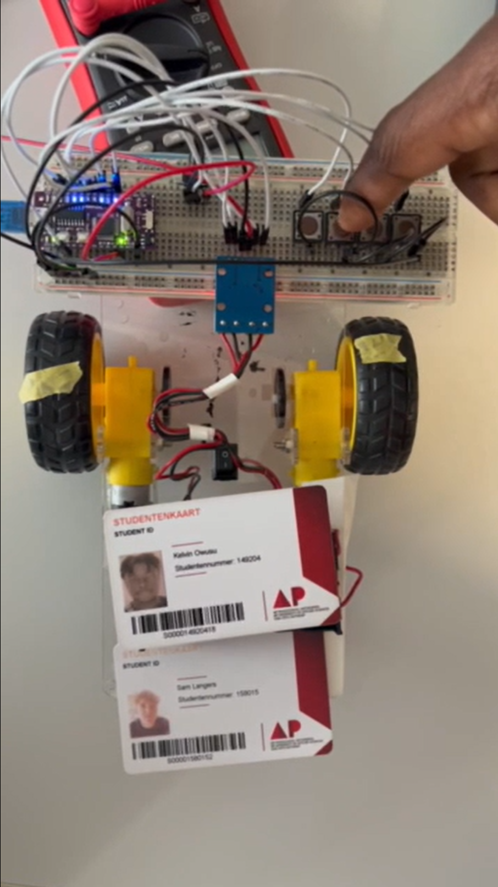

Project 3 - zelfrijdende Auto
Begin van de zelfrijdende auto met drukknoppen om de motoren te testen.
Beschrijving
Dit project is het begin van de zelfrijdende auto. In plaats van sensoren te gebruiken, hebben we eerst met drukknoppen gewerkt om de motoren te testen en de basiswerking van de auto te begrijpen. Zo konden we de motoren aansturen en controleren voor we overschakelden op automatische sturing.
Componenten
- Nano-maker
- Drukknoppen
- DC motoren
- Motordriver
- Breadboard
- Weerstanden